About Me
Halo! Saya Aulia Nurul Afiza, mahasiswi semester awal di Universitas Internasional Batam. Lahir di Batam, 11 Juni 2007. Saya sangat tertarik dengan teknologi dan analisis data.
My Personal Hobbies
✈️ Travelling
Menciptakan memori di setiap destinasi dan menikmati keindahan alam serta budaya yang berbeda.
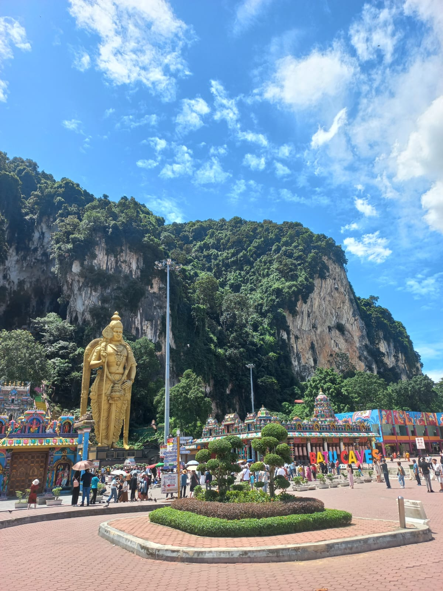
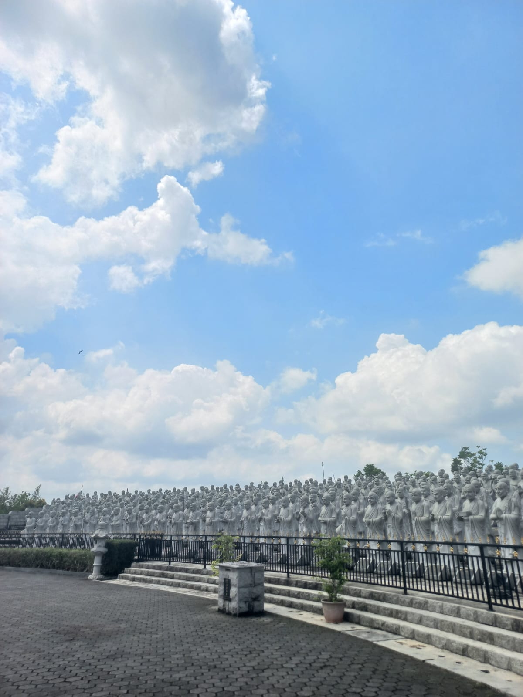
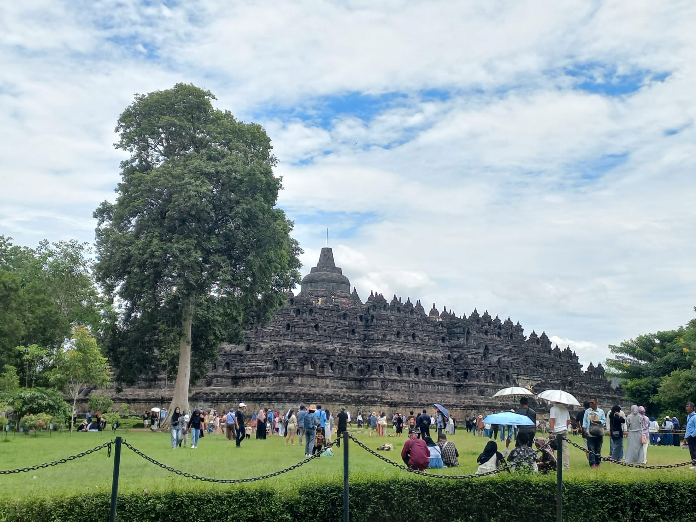
🎵 Musik
Melodi adalah teman terbaik saat sedang fokus belajar atau bersantai.
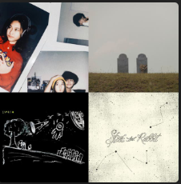
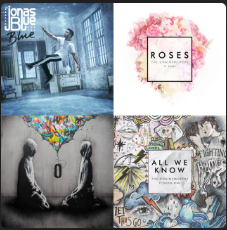
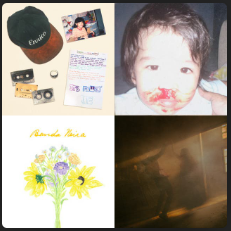
🎬 Film/Series
Menikmati alur cerita menarik dan mengambil pesan moral di dalamnya.
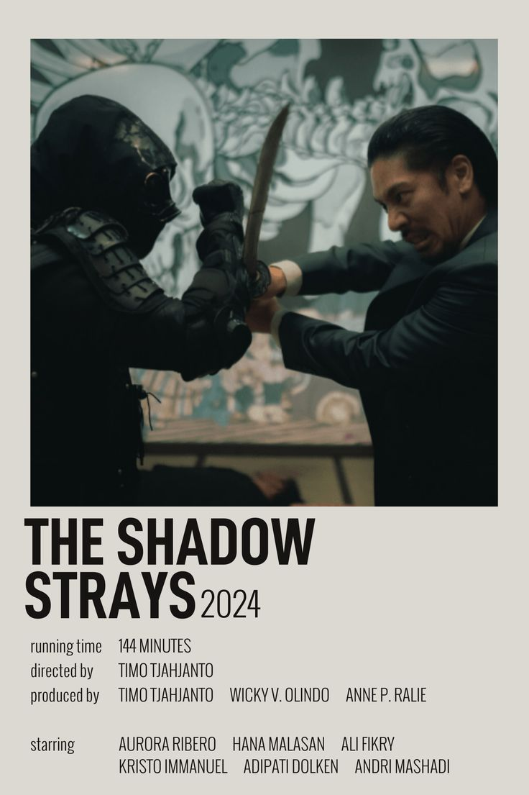

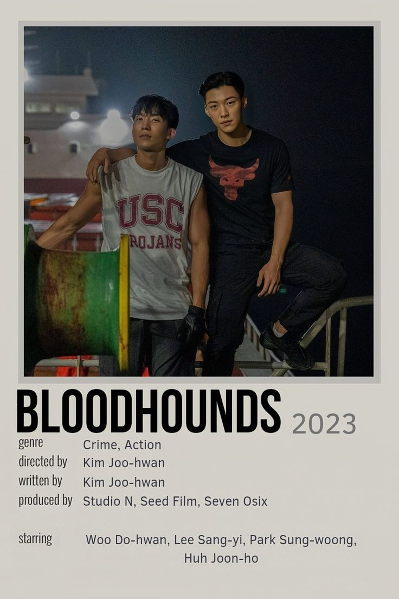
🍜 Kuliner
Menjelajahi berbagai cita rasa unik.
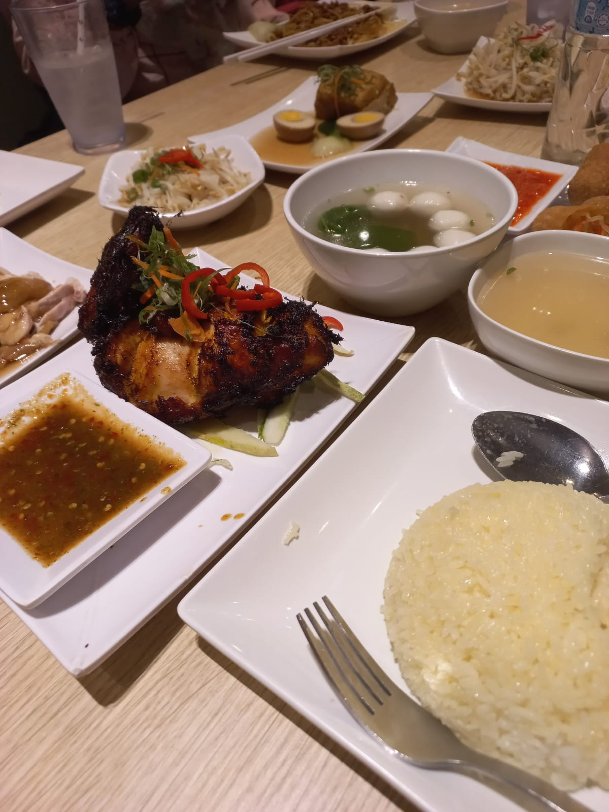
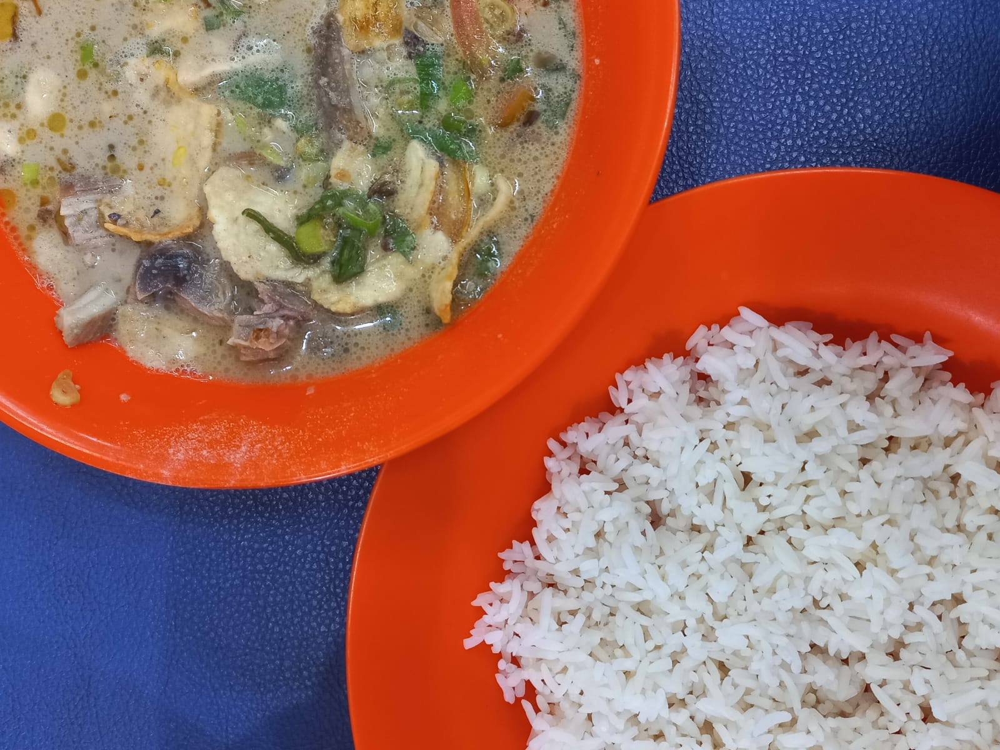
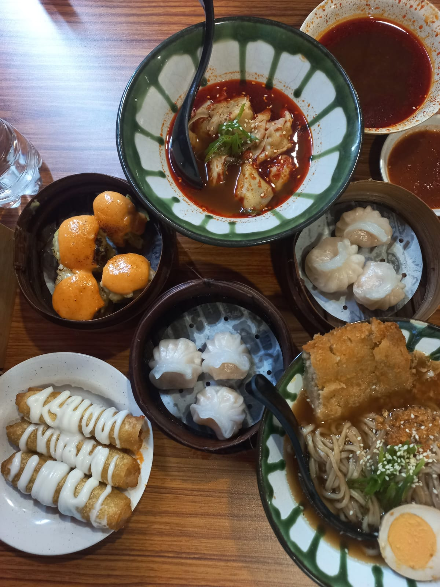
The Journey
Rekam jejak pendidikan saya:
| Tahun | Institusi | Keterangan |
|---|---|---|
| 2013 - 2019 | SDN 008 SEKUPANG | - |
| 2019 - 2022 | SMP IT NURUL MUHAJIRIN | - |
| 2022 - 2025 | SMAN 1 BATAM | IPS |
| 2025 - Sekarang | UNIVERSITAS INTERNASIONAL BATAM | S1 SISTEM INFORMASI |